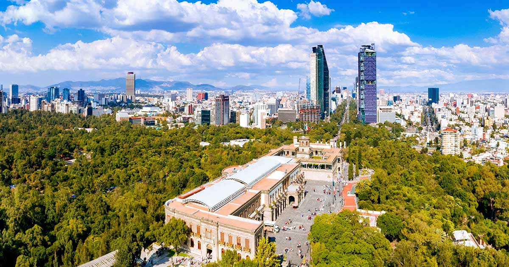
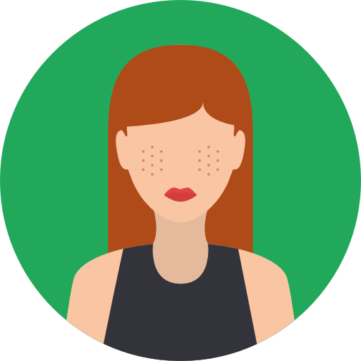
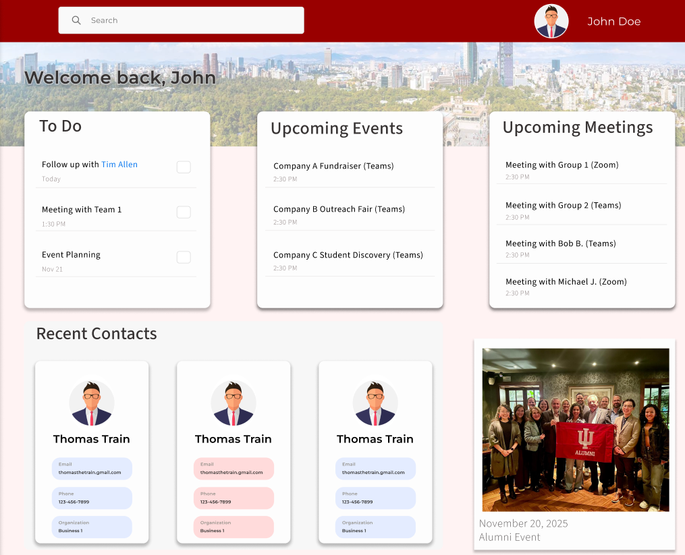
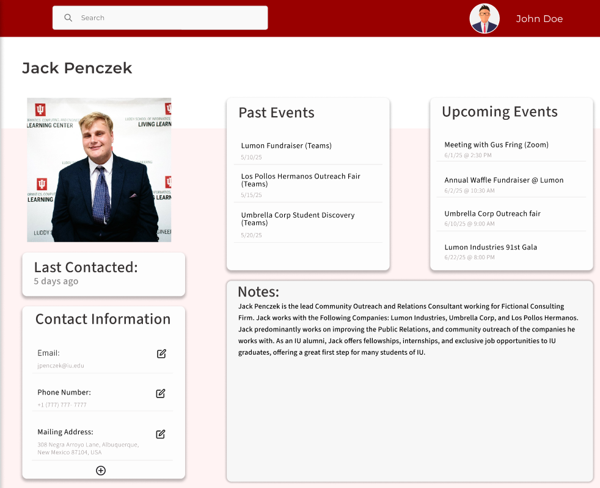

Capstone Project Page
The Problem
Upon numerious meetings with the IU Mexico Gateway team, the challenges they faced and their needs became clear. Our team needed to design an information system that will help the IU Mexico Gateway maintain and strengthen their client connections.

Our Goals
Event Management
The Mexico Gateway team plans, hosts, and tracks numerous events. Finding information and trying to locate information for each event the team has is a glaring pain point. With our system, we want event management to be as simple as possible.
Communication
Client connections is regarded as a main way the Mexico Gateway Team measures this success. Without solid communication, maintaining strong connections becomes a challenge. We want our system to enable smooth, simple, and organized communication.
Organization
Overall organziation and centralization is the basis for this entire project. We want the Gateway Team to be able to access important information and features in one place. The team can allocate their time from switching and searching between applications, to focusing on their mission.
Our Audience
We want each member of the Mexico Gateway Team to be able to use our system. Additionally, certain Mexico Gateway Clients would be able to use the system as well. With maintaining strong connections as a main goal of this project, designing for the Gateway Team and their clients made sense.

Gateway Team Member

Gateway Client
Initial Features

Homepage
Our homepage design offers multiple features within its page. The user is given a preview of different features when they first open our system including a to do list, upcoming events, upcoming meetings, contacts, and even a photo memory feature. This homepage was designed with the intent of centralization and organization for the Mexcio Gateway Team.

Profile Preview
With communication and client relationship as a main goal for this project, we wanted to design a feature where the Gateway Team could easily locate their client contacts. This page offers essential details such as contact information as well as details about the contact's event involvement. Maintaining relationships starts with knowing the person and this feature does just that.